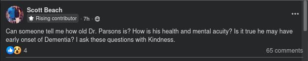
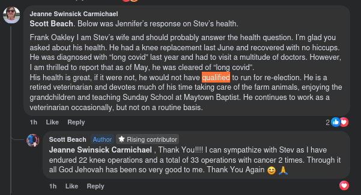
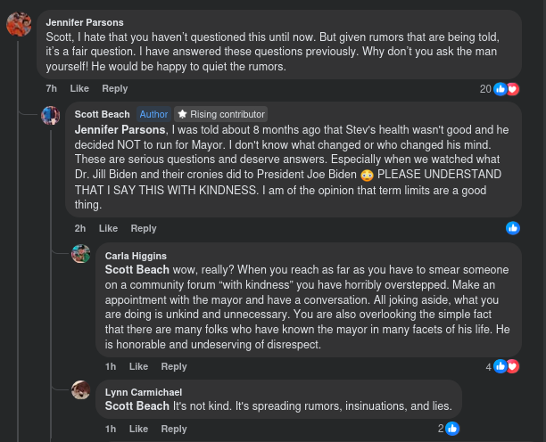
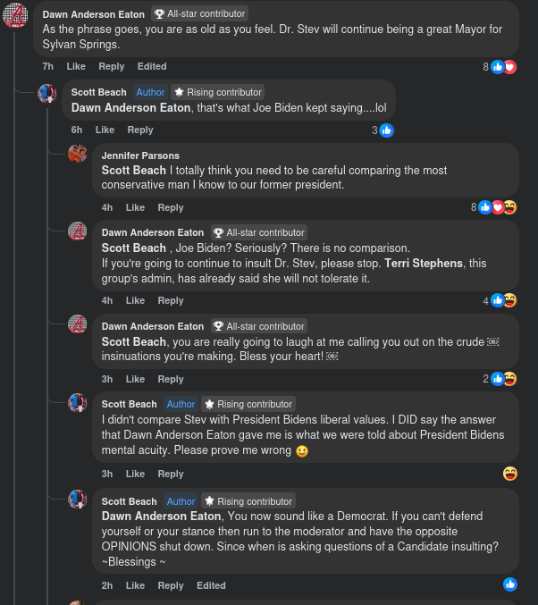
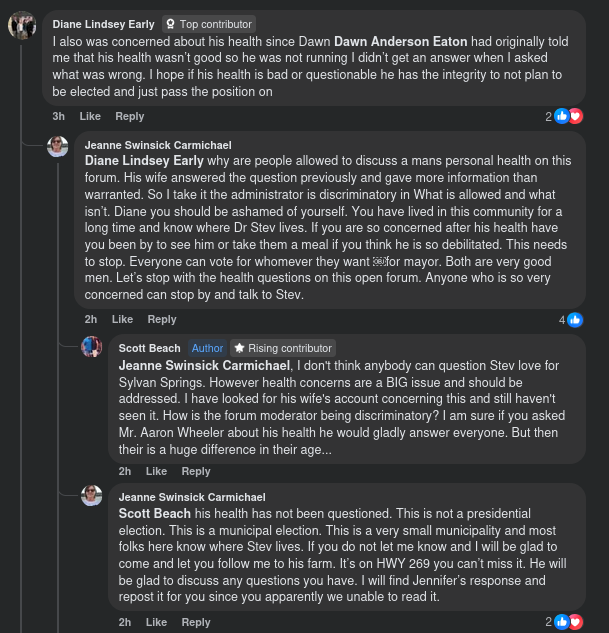
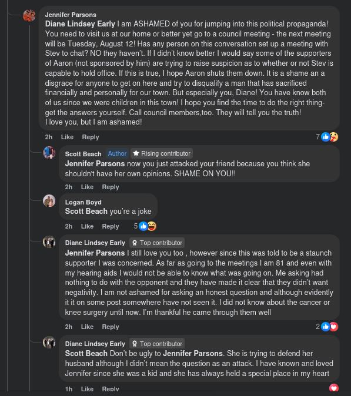

MYTH: If a mayor's health is not great, they would not qualify for re-election.
In Alabama, is there a requirement that a mayor be of sound body? Let's find out.
Sources: What's Happening in Sylvan Springs (Jennifer Parsons [mayor's wife/representing] post, which was deleted it seems, but reposted by another individual), State of Alabama Law
Original Story: August 2, 2025
In the What's Happening in Sylvan Springs? Facebook group, the civil war wages on between supporters of the 20+ year incumbent mayor, Stev Parsons, and other citizens who are either undecided or supporters of Aaron Wheeler. In what we have seen, much of the anger seems to be around the very existence of the question, or the discussion around election, electability.
In one particular post, a concern was raised about the health status of our mayor, which is a valid question, and out of genuine concern as well. If Stev (or even Aaron) wins and then steps down/seat vacates for any reason, it would cause the Council President (Current: Rickey Jones) to be appointed as mayor, until a special election or for remainder of term.
It is notable, that while there are some rough responses from Mrs. Parsons attempting to represent Stev online, Aaron Wheeler and his wife seem to be showing respect to citizens who have concerns about him, not arguing. You can't blame Jimbo for Billybob's actions. The devil didn't make us do it - the Bible busted that myth already. This aligns with Mr. Wheeler's idea that we need to be a closer community, discussed in our interview with him. What he said and is doing so far, seems to verify.
The Original Post

There was a post, which we couldn't find anymore, where the mayor's wife/representative Jennifer Parsons, had responded to someone else on this question. In that post, Mrs. Parsons indicated that if Stev Parsons' health was not good, he would not have qualified for re-election. For us, the most important thing, we are happy to hear Dr. Parsons is in good health. We grew up knowing this family and their contribution to our county and town.

But... was that a misrepresentation of the requirements to be mayor?
The answer is in the 2024 Code of Alabama, 11-43A-78.
Unfortunately, Jennifer Parsons statement is not accurate, and is a distortion of the facts. Such a rule would have been discriminatory on basis of age or health condition, and is in fact not a requirement in Alabama State Law.
Section 11-43A-78 - Election of Municipal Officers; Qualifications and Eligibility of Candidates; Runoff Election; Term of Office.
With respect to municipal elections, each candidate shall announce that he is to become a candidate for either mayor or for councilman of District 1, 2, 3, 4, 5, 6, or 7. A candidate may not run for both mayor and councilman in the same election. A candidate for mayor shall have resided in the municipality for a period of at least 90 days immediately preceding the date of regular election, and, if elected, shall continue to reside therein so long as he remains mayor. A candidate for councilman shall have resided within the district from which he seeks election for a period of at least 90 days immediately preceding the date of the regular election, and, if elected, shall continue to reside therein so long as he remains a councilman. Each voter in the election may cast one vote for a candidate for mayor and one vote for a candidate for councilman from the district in which the voter resides. Any candidate receiving a majority of the total votes cast for mayor or a majority of the total votes cast for councilman from any particular district shall be elected. In the event that no candidate receives a majority, then there shall be a runoff election for any such office to be held in a manner prescribed by the applicable general municipal election laws. The mayor and councilmen elected shall hold office for terms of four years each and shall serve until their respective successors have been elected and qualified. The mayor and councilmen may succeed themselves in office.
Opinion: Measure, Ask, Discuss... in a civil manner.
It is unfortunate that in Mrs. Parsons acting as a representative in a campaign, she has chosen to misrepresent Alabama law concerning the election. There were some past discussions that we have had with Mrs. Parsons, which left us feeling a bit unsatisfied with the answers on First Amendment grounds on another issue as well.
We hope we are able to live with each other after this. We can't be doing the things, shown in the screen captures below, and you can't rightly blame the existence of an election - it's a part of life in the best country on Earth: USA. History and our creator will judge us, as will our children, based on how we handled ourselves here.
From the same discussion thread, more mud slinging than a pottery house ran by animals
More than a few citizens that we have talked to, has mentioned Dr. Parsons was in rough shape - with care in their voice, and the response from Jennifer Parsons seemed discussing efforts to quiet the rumors, labelling it as nothing more than "political propaganda," which doesn't align to our recent interview discussing the important with open dialogue in elections, and transparency. She even followed up to tell a citizen "be careful." Rumors SHOULD be discussed, and quickly verified or busted before it festers into.....what we have here.... This is to allow voters to get an understanding of what is real or mythical. Sunlight is the best disinfectant. We don't support falsehoods either, but who gets to decide/arbitrate that in an election? The voters.


The question as to Dr. Parsons health is not a new question.
Later in this exchange, another citizen said they were concerned. In this town, when someone says they're concerned for a person's health, they mean it. However, the response from others wasn't savory in the least. Almost like this person was speaking on behalf of the Parsons campaign. We aren't sure if that was the case, or if there's any official campaign connection.

This is where we were taken back quite a bit. Whoa there.
This message was direct from Mrs. Parsons to a citizen.
So far, we haven't seen Aaron Wheeler nor his Wife engaging in this kind of thing. To us, this aligns with the idea of trying to unite people, rather than have civil war. That's a show of respect and character, even in the midst of social media power struggles.
